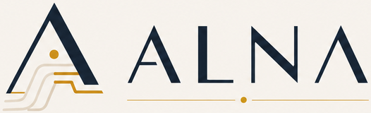

מפת התהליך
איך התהליך עובד, מי מעורב ואיפה נמצאו פערים.

ALNA מחברת בין מסמכים, נתונים והידע של העובדים והמנהלים, כדי להבין היכן הקושי, מה עשוי להסביר אותו ואילו כיווני פעולה מתאימים לארגון שלכם.
איך התהליך עובד, מי מעורב ואיפה נמצאו פערים.
מה עולה מהמקורות, היכן הם מסכימים ואיפה נדרש בירור.
אפשרויות מותאמות לאילוצים שלכם והצעה למה כדאי לבדוק בהמשך.
בהמשך, המטרה היא לשמור את הקשר בין הממצא, ההסבר שנבדק, הפעולה שנבחרה ומה שנצפה אחרי היישום. בכל מחזור חוזרים למפה, בודקים מה השתנה ומעדכנים את ההבנה לקראת ההחלטה הבאה.
השלב הזה נמצא בפיתוח ונפרד מהאבחון הראשון. מדדים, משך המעקב והאחריות ליישום יוסכמו מראש. שינוי במדד לבדו אינו מוכיח שהפעולה היא שגרמה לו.
בשיחת היכרות נברר מה מטריד אתכם, מה כבר ניסיתם ומה תרצו לדעת כדי להחליט על הצעד הבא. היקף העבודה ולוח הזמנים ייקבעו לפי התהליך, החומרים והמוכנות להתחלה.
ALNA נמצאת בפיתוח. מתחילים באבחון של תהליך ממוקד; מחזורי המשך ליישום, מדידה ולמידה יתוכננו ויוסכמו בנפרד.